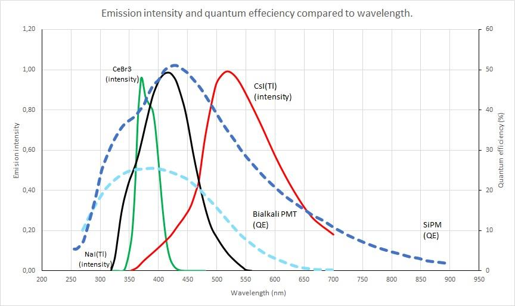

A scintillation detector cannot perform better than the worst link in the chain that converts incident radiation to a measured pulse height. One of the most overlooked links is the spectral overlap between the scintillator's emission and the photodetector's quantum efficiency. A high-light-yield scintillator coupled to a photodetector that does not see its emission well is wasted potential. This chapter is the spectral-overlap reference for the rest of the book.
Every scintillator emits light over some wavelength range, characterized by an emission peak wavelength and a spectral width that depends on the material. Every photodetector has a spectral quantum efficiency (QE) curve, the probability that an incident photon at a given wavelength produces a measurable photoelectron or photocurrent contribution. The integrated product of the emission spectrum and the QE curve, normalized by the emission spectrum, gives the effective photodetection efficiency of the system.
The classical mismatch case is CsI(Tl) with a bialkali PMT. CsI(Tl) emits at 550 nm. A standard bialkali PMT's QE peaks at around 400 nm and falls off rapidly above 500 nm. The result is that CsI(Tl) coupled to a bialkali PMT delivers only about 45 percent of the measured pulse height of NaI(Tl) at the same gamma energy, even though the absolute scintillation light yield of CsI(Tl) is comparable to NaI(Tl). Pair the same CsI(Tl) crystal with a silicon photodetector (photodiode or SiPM), and the relative pulse height jumps to 165 percent of NaI(Tl).
The matching problem is why the same scintillator material can have dramatically different "light yield" numbers in different vendor specifications. Always check the photodetector type when reading a light-yield number.

Scintillator emission peak wavelengths span from the deep UV (BaF2 at 220 nm fast component) to the green-yellow region (CsI(Tl) at 550 nm and GAGG:Ce at 520 nm). Most modern materials emit in the blue-green band (350 to 500 nm), which historically was driven by the spectral response of bialkali PMTs and is now driven by the response of silicon photodetectors.
The reference table:
Table 6.1 - Emission peak and spectral character of representative scintillators
| Material | Emission peak (nm) | FWHM (nm, approx) | Notes |
|---|---|---|---|
| BaF2 (fast) | 220 | 30 | Sub-ns; quartz window required |
| BaF2 (slow) | 315 | 40 | Microsecond, weaker |
| CsI (undoped) | 315 | 50 | Fast, low yield |
| LaCl3:Ce | 350 | 30 | High resolution |
| LuAG:Pr | 305 | 25 | Very fast |
| CeBr3 | 370 | 30 | High yield, low background |
| LaBr3:Ce | 380 | 40 | High yield, La-138 BG |
| CsI(Na) | 420 | 70 | Hygroscopic, PMT match |
| NaI(Tl) | 415 | 70 | Workhorse, PMT match |
| LYSO:Ce, LSO:Ce | 420 | 60 | TOF-PET standard |
| BGO | 480 | 80 | Slow, low yield |
| GAGG:Ce | 520 | 80 | SiPM-optimized |
| CsI(Tl) | 550 | 100 | SiPM-optimized |
| Plastic (typical PVT) | 380-450 | 100 | Tunable by dye choice |
| ZnS(Ag) | 450 | 80 | High yield, opaque |
| 6Li-glass (GS-20) | 390 | 60 | Ce-activated |
Emission spectra are usually reported as relative intensity versus wavelength normalized to the peak. Real measurements include fine structure, secondary peaks, and slow tails that the table cannot capture; consult the vendor or the original characterization paper for shape data.
The four photodetector families and their characteristic QE peaks:
Bialkali photomultiplier tubes peak around 400 to 420 nm, with roughly 25 to 30 percent peak QE in modern tubes. Falls off rapidly above 500 nm. Standard borosilicate windows cut off sharply below 300 nm; quartz windows extend useful response down to about 180 nm at the cost of higher transmission at all wavelengths.
Multi-alkali (S20) photomultipliers extend the response further into the red, peaking around 400 to 450 nm with measurable QE out to 700 nm. Slightly lower peak QE than bialkali. Useful for matching CsI(Tl) and other red-emitting scintillators when SiPM is not an option.
Silicon photodiodes peak around 700 to 900 nm, with QE above 80 percent in the 500 to 900 nm range. The response extends from about 350 nm (limited by the front-surface dead layer) to about 1100 nm (limited by silicon bandgap). Long-wavelength scintillators including CsI(Tl) and GAGG:Ce match silicon photodiodes well. Photodiodes have unity gain (no internal multiplication), so they need a low-noise preamplifier to recover the pulse from a few-thousand-photon scintillation event; this limits photodiode use to high-light-yield scintillators and modest energy thresholds.
Silicon photomultipliers (SiPMs) are arrays of avalanche photodiode microcells operated above breakdown, with internal gain of 10^5 to 10^6. The QE of the underlying photodiode is multiplied by the geometric fill factor of the microcell array to give the photodetection efficiency (PDE) of the SiPM. Modern SiPMs achieve PDE peaks of 50 to 65 percent in the 400 to 500 nm range with cells optimized for the blue-green band [1][2]. Red-extended SiPM variants extend useful PDE to 700 nm or beyond. SiPMs are the dominant solid-state photodetector for scintillation applications introduced after 2015.
Table 6.2 gives typical QE values across the wavelength range that matters for scintillation.
Table 6.2 - Photodetector QE/PDE versus wavelength (typical values, percent)
| Wavelength (nm) | Bialkali PMT QE | Multi-alkali PMT QE | Si Photodiode QE | SiPM PDE (NUV) | SiPM PDE (RGB) |
|---|---|---|---|---|---|
| 200 | 18 (quartz) | 18 (quartz) | 0 | 0 | 0 |
| 250 | 24 | 22 | 5 | 30 | 8 |
| 300 | 28 | 26 | 30 | 45 | 18 |
| 350 | 27 | 26 | 50 | 55 | 30 |
| 400 | 25 | 24 | 65 | 60 | 45 |
| 450 | 22 | 23 | 75 | 55 | 55 |
| 500 | 16 | 20 | 80 | 45 | 60 |
| 550 | 10 | 15 | 85 | 35 | 55 |
| 600 | 5 | 12 | 88 | 25 | 50 |
| 650 | 2 | 8 | 90 | 18 | 42 |
| 700 | 1 | 5 | 88 | 12 | 35 |
| 800 | 0 | 2 | 82 | 6 | 22 |
| 900 | 0 | 1 | 60 | 2 | 12 |
Note that the SiPM columns are split between "NUV" (near-ultraviolet optimized) and "RGB" (red-green-blue optimized) variants. The NUV products optimize for blue and near-UV scintillators (LaBr3, LSO, LYSO, BGO, NaI). The RGB products optimize for green and red scintillators (CsI(Tl), GAGG:Ce). Picking the right SiPM variant for the scintillator can move the system PDE by 15 to 20 percentage points.

The combination of CsI(Tl) with an RGB-optimized SiPM array delivers:
The trade-offs: SiPMs have temperature-dependent gain (1 to 2 percent per degree Celsius) that requires bias compensation, dark count rates higher than a PMT, and crosstalk between microcells that complicates very low-energy thresholds. None of these defeat the architecture for handheld and compact instrument use; the main effect is that the design has to include digital temperature compensation in firmware.
For larger crystals (above 3 inches) or very low-rate applications (low-background counting), PMTs still win on photocathode area per dollar and on integrated dark current. Chapter 9 covers the full picture.
A short reference for common matchings:
The window between the scintillator and the photodetector matters at short wavelengths. Borosilicate glass cuts off sharply below about 300 nm. Quartz (fused silica) extends transmission to about 180 nm. UV-transmitting glass (UVT) is intermediate. For BaF2 fast-component readout, quartz is required. For most other scintillators, borosilicate is fine.
Optical coupling between the scintillator and the photodetector is done with optical grease (silicone-based, refractive index 1.4 to 1.5) for routine applications, optical cement (cured epoxy or silicone) for permanent bonds, or air gaps where mechanical separation is required and the resulting transmission loss can be tolerated. Index-matching in optical contact reduces Fresnel reflection losses, which can otherwise total 10 to 20 percent at each interface.
BNC in Practice - The PDE check before the order
Two minutes with a calculator before placing an order saves a lot of regret afterward. Pull the scintillator emission spectrum from the manufacturer datasheet. Pull the photodetector PDE curve. Multiply them point by point and integrate. The number that drops out is the effective photodetection efficiency, which is what determines pulse height and energy resolution at the system level. A high-yield scintillator paired with the wrong photodetector can deliver less measured signal than a modest scintillator paired correctly. The spectral overlap matters more than either component's headline number.
A correctly matched scintillator and photodetector deliver a pulse height that the engineer can stop thinking about. An incorrectly matched pair shows up as marginal energy resolution that nobody can quite explain, light yield numbers that disagree with the datasheet, and an instrument that almost works. Most of the practical complaints about scintillation detectors trace to spectral mismatch somewhere in the chain. The chapters that follow assume the matching has been done. Chapter 9 details how the photodetectors themselves work, and Chapter 11 puts them inside actual housings.
Take it interactively. The quiz lives on its own page. Pick one answer per question, then check your score. Auto-scored, and your answers are saved on this device. About 10 minutes.
Or read the questions and answers inline below (preserved for print and offline use).
[1] M. Mazzillo et al., "Silicon photomultiplier technology at STMicroelectronics," IEEE Trans. Nucl. Sci., vol. 56, no. 4, pp. 2434-2442, 2009.
[2] N. Otte et al., "Characterization of three high-efficiency and blue-sensitive silicon photomultipliers,